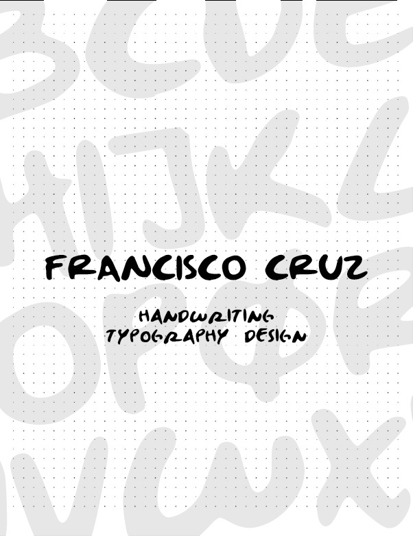
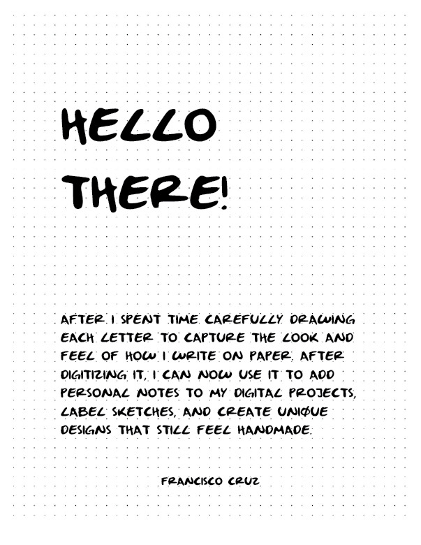
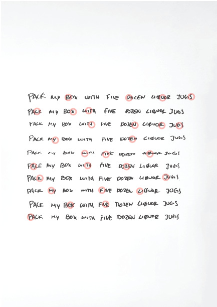
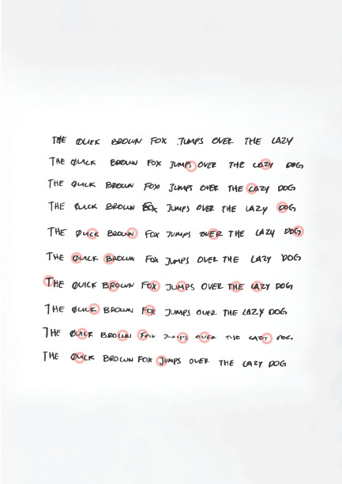
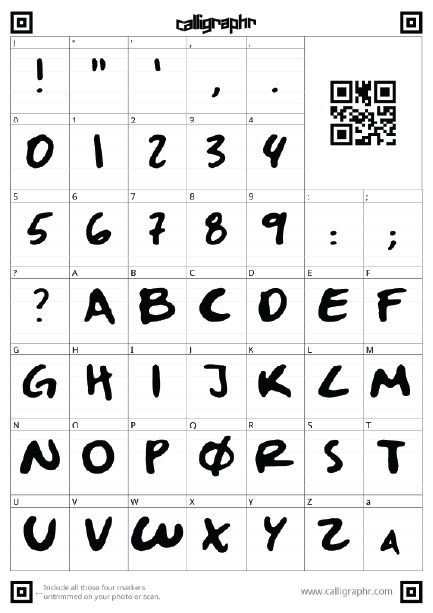
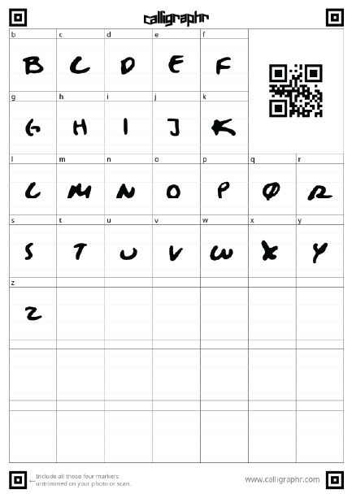
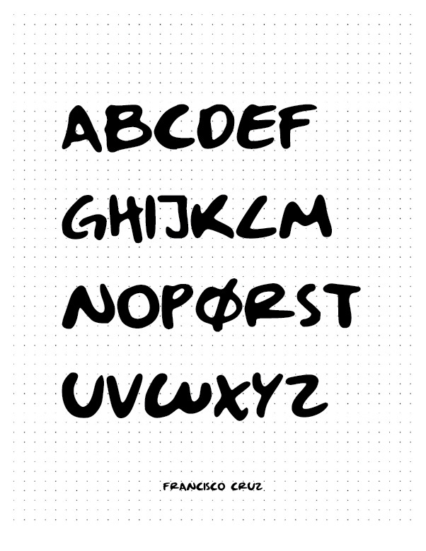
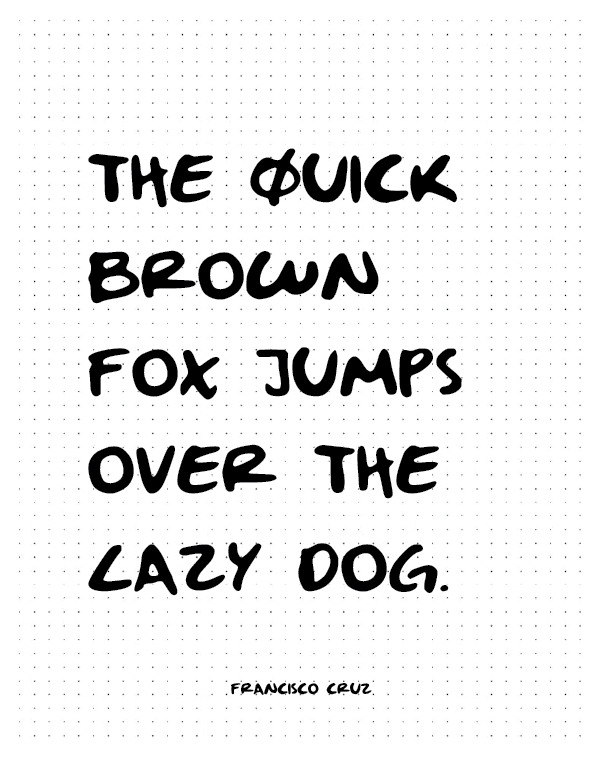
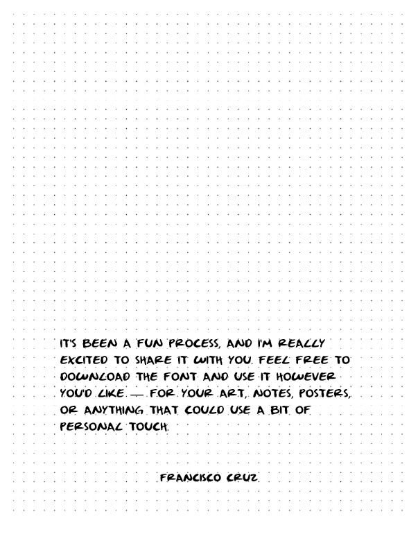
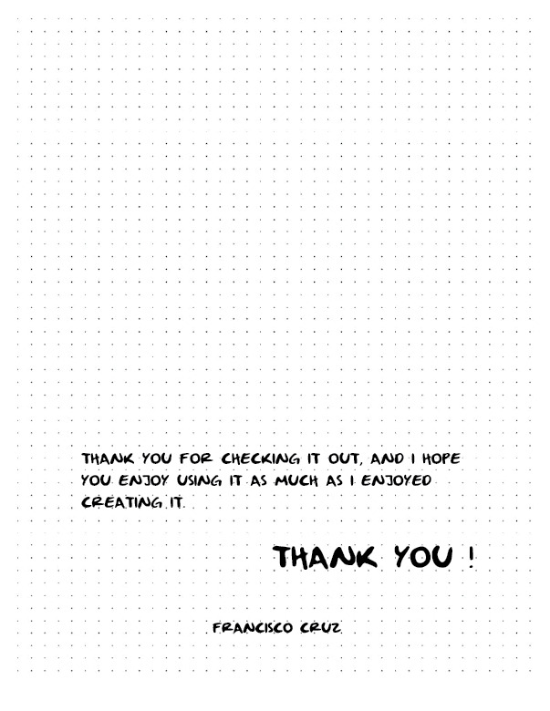

A custom typeface built from my own handwriting, digitized letter by letter into a working font. I wanted a way to add handwritten elements to my digital projects, notes, sketches, labels, and designs, while still keeping the authenticity of something handmade.


01 The Process
The process started on paper. I wrote out phrases like “The quick brown fox jumps over the lazy dog” and “Pack my box with five dozen liquor jugs” to capture every letter of the alphabet, then went back through what I'd written and picked out the clearest version of each character, refining and redrawing it to keep the feel of my own handwriting.


02 Digitizing
Through this process I found out my handwriting is naturally monospaced and written in all caps. That led to two versions of the font, one mapped to uppercase keys and one to lowercase, so it can be used either way depending on what someone needs.


03 The Result
After digitizing every character, I had a fully usable font that reflects how I actually write on paper. Seeing my own handwriting work as a real typeface, something I can drop into notes, sketches, or any other digital project, has been one of the more rewarding parts of this one.



